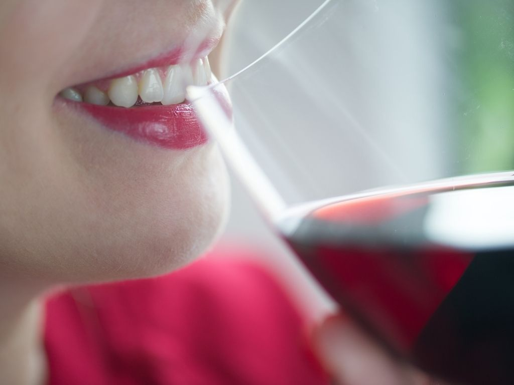
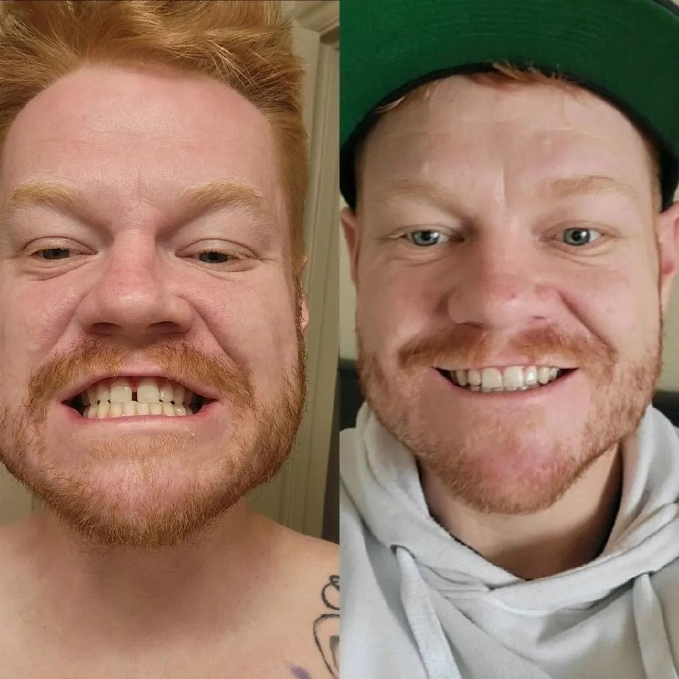

"Los dientes amarillos significan la muerte lenta de tu autoestima"
¿Dientes amarillos? Si le preocupa tener los dientes amarillos, en este artículo veremos las causas y las soluciones de este desagradable fenómeno, que en la mayoría de los casos puede provocarle inseguridad y hacerle pensar: tengo los dientes amarillos, pero ¿cómo puedo solucionarlo?
Los dientes blancos, desde el punto de vista estético, son más bonitos y atractivos, por lo cual, si tiene los dientes amarillos, se pregunta por qué le ocurre esto y cuáles son las soluciones. L,e sugerimos que lea este artículo en el que le explicamos las causas y le proponemos soluciones a este problema.
¿Por qué tengo los dientes amarillos, es malo?
«¿Por qué tengo los dientes amarillos, es malo y qué puedo hacer al respecto?» Al ver a alguien con unos dientes bonitos, sanos y blancos, uno puede preguntarse: "¿Por qué tengo los dientes amarillos, ¿cómo puedo conseguir esta blancura, quizá me pasa algo?".
Primero, nos gustaría aclarar que los dientes amarillos no necesariamente significan algo malo. La mayoría de las situaciones que provocan el amarillamiento de los dientes no amenazan la salud de sus dientes y encías y son más un problema estético que de salud.
En cualquier caso, hoy en día, gracias a los avances de la odontología existen múltiples opciones de blanquear sus dientes u ocultar la decoloración, así que si tiene los dientes amarillos y está buscando una solución, espere hasta el final de este artículo, donde le informaremos de la mejor solución sin duda que no requiere ninguna intervención odontológica.
Pero antes de informarle sobre la solución, le sugerimos primero consultar las posibles causas de los dientes amarillos.

Causas de los dientes amarillos
Las causas de los dientes amarillos son muy diferentes. En algunos casos se pueden prevenir y en otros no. Esto significa que en muchos casos no se puede hacer nada para evitarlo y solo queda afrontar las consecuencias.
Así, entre las causas del amarillamiento de los dientes podemos distinguir las causas ajenas a nuestros hábitos de comportamiento (genética, edad, enfermedades) y las causas relacionadas con nuestros hábitos (higiene, alimentación, tabaquismo).
En función de estas causas y la razón del amarillamiento de los dientes, las soluciones y tratamientos serán diferentes.
La mayoría de las personas asocian los dientes amarillos a los hábitos de higiene y siguen cepillándose los dientes con mucha fuerza y frecuencia sin conseguir los resultados deseados. En estos casos, es posible que se pregunten: ¿Por qué se me ponen amarillos los dientes si me los cepillo?" Veremos esto en la siguiente sección.
Por qué se me ponen amarillos los dientes si me los estoy cepillando.
¿Por qué se me ponen amarillos los dientes si me los estoy cepillando?". La respuesta es sencilla: porque los dientes amarillos no siempre dependen del cepillado y no siempre están relacionados con los hábitos de higiene.
Además, al cepillars emasiado y con demasiada fuerza provoca que el esmalte de sus dientes se desgaste y estos pierdan su blancura natural.
Dientes amarillos por envejecimiento
Los dientes amarillos debidos al envejecimiento son una de las razones no relacionadas con sus hábitos que pueden causar los dientes descoloridos.
Durante el proceso natural de envejecimiento, el esmalte dental se deteriora y, con el tiempo, los dientes se vuelven amarillos.
En este sentido, cepillarse cada vez más fuerte no ayudará a que sus dientes se vuelvan más blancos.
La prevención y un correcto cepillado y cuidado del esmalte durante toda la vida serán la mejor solución para ralentizar la decoloración de sus dientes.
Dientes amarillos por causas genéticas
Así es, los dientes amarillos pueden ser causados por razones genéticas no directamente relacionadas con sus hábitos alimenticios o de higiene.
¿Por qué ocurre esto? Al igual que cada persona nace con su propio color de pelo, piel u ojos, el color de nuestros dientes también puede determinarse por nuestro ADN.
Uno de los factores que más influyen en el color de los dientes es la relación entre el color de la dentina y el grosor del esmalte.
La dentina es el tejido del interior de los dientes y, en función de su grosor y aspecto, los dientes pueden parecer más blancos o más amarillos.
El esmalte es la capa transparente que recubre los dientes y también es el tejido más duro de nuestro cuerpo (incluso más que los huesos).
Puede ser más grueso o más fino, más o menos transparente y tener más o menos coloración de la dentina en función del grado de mineralización del esmalte.
Así, si la dentina es genéticamente más oscura, los dientes también lo serán.

Dientes amarillos por medicación
Otra razón que no tiene nada que ver con sus hábitos son los dientes amarillos causados por la medicación. Algunos tratamientos provocan el deterioro del esmalte. Entre ellos destacan antibióticos como la tetraciclina o la doxiciclina, especialmente en las etapas de desarrollo de los dientes.
A lo largo de la vida, el abuso de colutorios o dentífricos fluorados en niños menores de 6 años también puede ser la causa de los dientes amarillos.
En cuanto a los tratamientos que afectan al color de los dientes, la quimioterapia, por ejemplo, puede provocar la decoloración de los dientes.
Como hemos mencionado en este artículo, las causas de los dientes amarillos no siempre vienen determinadas por los hábitos de una persona. En este sentido, también podemos argumentar que las causas anteriores no comprometen la salud de la sonrisa, sino que son solo un problema estético.
Pero, ¿qué pasa con las causas del amarillamiento de los dientes relacionadas con sus hábitos? La primera, aunque parezca obvia, son los dientes amarillos por falta de higiene.
Dientes amarillos por falta de higiene
Una de las causas más comunes de los dientes amarillos es la falta de higiene o la higiene bucal insuficiente.
Cuando no nos cepillamos los dientes con regularidad y prescindimos de otros elementos de higiene como el hilo dental, la suciedad se acumula en los dientes, destruyendo el esmalte y haciendo que los dientes se vuelvan más amarillos.
Al contrario, si nos cepillamos demasiado fuerte o en exceso, también podemos desgastar el esmalte y decolorar los dientes.
¿Cómo evitarlo? Siga con constancia y cuidado las normas de higiene bucal.
Otra causa de los dientes amarillos relacionada con los hábitos individuales es el tabaquismo. Fumar provoca, entre otras cosas, el amarillamiento de los dientes.

Dientes amarillos por tabaquismo
El tabaquismo es una de las principales causas del cambio de color de los dientes.
La nicotina, el alquitrán y otras sustancias tóxicas se acumulan en la superficie de los dientes y provocan su amarillamiento. Basta con ver el aspecto que tiene el filtro de un cigarrillo después de fumarlo para darse cuenta de ello. Si extrapolamos esto a varios cigarrillos al día y muchos paquetes al año, queda claro que los fumadores son más propensos a sufrir estos cambios en el color del esmalte.
Por último, detallamos qué ocurre con los dientes amarillos por el consumo de ciertos alimentos.
Dientes amarillos por el consumo de ciertos alimentos
Los dientes amarillos también pueden ser provocados por ell consumo de ciertos alimentos.
Se dice que somos lo que comemos, pero también se puede decir que nuestra sonrisa es lo que comemos.
En este sentido, hay ciertos alimentos que aceleran la coloración del esmalte dental, ya sea porque lo desgastan o porque lo van manchando poco a poco, provocando dientes amarillos, grises o más oscuros.
Por lo tanto, hemos visto las causas más comunes del amarillamiento de los dientes, pero... ¿ylas soluciones? ¿Sabe cómo aclarar los dientes amarillos?
Para corregir el amarillamiento de los dientes actualmente se proponen dos soluciones profesionales, seguras, duraderas y mínimamente invasivas.
Por un lado, el blanqueamiento dental para dientes amarillos y por otro las carillas dentales para dientes amarillos.
Aunque el blanqueamiento dental y las carillas dentales pueden ser métodos eficaces para mejorar la estética de los dientes, tienen sus inconvenientes que hay que tener en cuenta a la hora de tomar la decisión.
El blanqueamiento dental puede causar sensibilidad dental y molestias, especialmente si sus dientes ya presentan daños en el esmalte o hipersensibilidad. Con algunos métodos de blanqueamiento, como las tiras blanqueadoras, es posible que los dientes se blanqueen de forma desigual o que tengan diferentes tonos, lo que puede dar aspecto poco natural y desagradable. Además, el blanqueamiento frecuente puede debilitar el esmalte dental y aumentar el riesgo de caries y otros problemas bucales.
Las carillas dentales, que son finas placas de cerámica o composite, pueden ser más caras que el blanqueamiento dental. Además, el procedimiento de colocación de las carillas es irreversible, por lo cual es importante prestar mucha atención a su elección. La colocación de carillas también puede provocar la disminución de la sensibilidad dental y un aumento del riesgo de sufrir diversos problemas de salud dental.

Entonces, ¿qué conviene hacer? Relájese, porque al principio del artículo prometimos hablarle de una solución innovadora a su problema.
Te presentamos las carillas extraíbles.
Fueron inventadaos en 2021 en EE. UU. y son ideales para todo tipo de dientes.

Para fabricar las carillas extraíbles se utiliza un material polimérico de alta calidad y gran elasticidad. Esto significa que el elástico es de tamaño universal y se adapta a cualquier tipo de mandíbula, garantizando el ajuste seguro para cualquier tipo de dientes.

Estas carillas se recomiendan para cualquier persona que desee una sonrisa mejor gracias a un procedimiento indoloro que puede hacer que su sonrisa vuelva a ser más blanca y, al mismo tiempo, aumentar su autoestima.
Las carillas extraíbles pueden ser usadas 24 horas al día, 7 días a la semana, sin molestias ni incomodidades.
Antes de comprar, asegúrese de adquirir solo carillas extraíbles originales a través del formulario de pedido original. El mercado está lleno de falsificaciones y copias de baja calidad de este producto.
¿A qué espera? Pida ya las carillas extraíbles para lucir la sonrisa blanca y perfecta.

Alba Martinez
Gracias por este magnífico artículo. Siempre he querido mejorar mi sonrisa y las carillas removibles parecen una gran solución.
Me gusta
Contestar
Traducir
Hace más de una hora
Teresa Díaz
Yo también he estado usando carillas removibles últimamente y estoy muy contenta con el resultado. ¡Mira mi transformación!
Me gusta
Contestar
Traducir
Hace más de una hora
Patricia Delgado
A menudo me da vergüenza sonreír debido a mis dientes, y este problema me ha perseguido durante bastante tiempo. He ido varias veces al dentista preguntando por las opciones, pero no solo son todas inasequibles para mí, sino que además son bastante dolorosas. Pero ahora creo que las carillas removibles pueden ayudarme. ¡Gracias por el consejo!
Me gusta
Contestar
Traducir
Hace más de una hora
Manuel Serrano
Tenía algunas preguntas sobre las carillas removibles, pero el artículo me ha dado todas las respuestas. Definitivamente consideraré esta opción.
Me gusta
Contestar
Traducir
Hace más de una hora
Monica Rubio
Creo que las carillas removibles pueden mejorar mucho mi sonrisa, sobre todo porque ya no tengo miedo de que sean demasiado caras en comparación con otros métodos como las prótesis dentales.
Me gusta
Contestar
Traducir
Hace más de una hora
Javier Blanco
Hace aproximadamente un año, me enteré de este método para mejorar mi sonrisa de las carillas removibles y decidí que exploraría el tema más a fondo. Hace tres meses las compré y me sorprendió gratamente el efecto. ¿Qué opináis?
Me gusta
Contestar
Traducir
Hace más de una hora
Juana Castro
Siempre pensé que las carillas removibles podrían hacerme sentir incómoda al comer o hablar, pero el artículo disipó mis temores.
Me gusta
Contestar
Traducir
Hace más de una hora
Beatriz Sanz
Me gustaría saber un poco más sobre la calidad de su fabricación y el tiempo que durarán en buen estado con un uso regular.
Me gusta
Contestar
Traducir
Hace más de una hora
Teresa Díaz
Beatriz, no te preocupes, ¡son de muy buena calidad! Llevo usándolas medio año y no he tenido ningún problema
Me gusta
Contestar
Traducir
Hace más de una hora
Manuela Iglesias
Muchas gracias por escribir este artículo. Nunca había pensado en las carillas removibles, pero ahora tengo una nueva opción para mejorar mi sonrisa.
Me gusta
Contestar
Traducir
Hace más de una hora
Julia Marín
Llevaba mucho tiempo pensando en arreglarme los dientes, pero tenía miedo de que fuera doloroso y caro. Después de leer tu publicación sobre las carillas removibles, decidí que era lo que necesitaba. ¡Gracias por la inspiración!
Me gusta
Contestar
Traducir
Hace más de una hora
Silvia Torres
Llevo unos años queriendo hacer algo con mis dientes, pero no sabía por dónde empezar. Tu publicación sobre las carillas removibles me dio la idea de que es posible y estoy deseando que me entreguen mis carillas.
Me gusta
Contestar
Traducir
Hace más de una hora
Andrea Romero
Estuve en una boda hace unos meses y puedo decir que la novia estaba guapísima gracias a las carillas removibles. En ese momento pensé que era una gran solución para aquellos que quieren tener una sonrisa bonita y las llevo usando desde hace unos meses. ¡Gracias por este maravilloso invento! Mira mi resultado.
Me gusta
Contestar
Traducir
Hace más de una hora
Nuria Gutiérrez
Me encanta reír, pero siempre me he avergonzado de mi sonrisa debido a una mala mordida. Las carillas removibles parecen ser la solución perfecta para mí y estoy deseando probarlas.
Me gusta
Contestar
Traducir
Hace más de una hora
Irene Alonso
Creo que una sonrisa bonita puede ayudar a una persona a sentirse más segura y atractiva. Si las carillas removibles pueden ayudarme a conseguirlo, entonces me encantaría probar esta solución, ¡ya que no hay mejor inversión que en mi personalidad y mi salud!
Me gusta
Contestar
Traducir
Hace más de una hora
Rosa Vásquez
Gracias por compartir tu experiencia con las carillas removibles. He estado pensando en mejorar mi sonrisa, pero no sabía que había formas tan asequibles y rápidas. Después de leer tu artículo, definitivamente consideraré esta opción.
Me gusta
Contestar
Traducir
Hace más de una hora
Rafael Navarro
Estoy de acuerdo en que la sonrisa es una parte importante de nuestras vidas. Siempre me han acomplejado mis dientes y nunca me he sentido seguro de mí mismo. Estoy seguro de que las carillas removibles pueden ayudarme a solucionar este problema. Gracias por el artículo, me motiva a probarlas.
Me gusta
Contestar
Traducir
Hace más de una hora
Pilar Álvarez
Mi marido y yo llevamos mucho tiempo pensando en mejorar nuestras sonrisas, pero no estábamos preparados para someternos a una cirugía y a largos tratamientos. Hace poco probamos las carillas removibles y quedamos maravillados, ¿qué opinais?
Me gusta
Contestar
Traducir
Hace más de una hora
Antonia Gil
¡Guau! Pilar, ¡esto es increíble!
Me gusta
Contestar
Traducir
Hace más de una hora
PEDIR
SNAP-ON SMILE